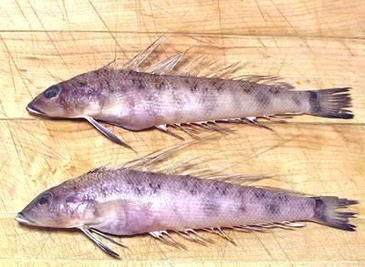

Spotted Goby

[family Gobiidae ??]
The fish shown here, wild caught in Vietnam, are not any of the
"spotted gobies" listed on Fishbase, but fishbase lists 1786 species
of goby and has photos of only half of them. I looked at all the
photos and didn't find this one, so some goby expert will have to ID
it - if it is actually a goby. These fish measured about 5-3/4 inches
long and weighed about 1 ounce each.
More on Gobies.
Gobies are a bit of a challenge for a regular North American fish
eater. They are very small, some have a unique and fairly strong flavor,
the skins are tough and turn into glue when heated, they are bony and
prickly. I have no idea how they're eaten in Asia, but I have come up
with a method by which these fish can be enjoyed without an undue
amount of effort.
The flesh is medium colored and has a distinct and fairly assertive
flavor typical of gobies.
Buying;
These or similar gobies can be found now and
then in markets serving Philippine and Southeast Asian communities. They
are usually at a low price, often US $1.99 per pound.
Method;
- Scrape off the scales. This fish has huge scales for its size,
but they scrape off pretty easily.
- Cut off the head diagonally, forward at the top passing behind the
pectoral and pelvic fins. Discard it.
- Scrape out the guts. There won't be a lot because the body cavity
is very short and most guts went out with the head.
- Fillet. Hold down the tail, cut through the tough skin at the tail
and fillet in a single stroke forward, leaving the backbone and fins.
When you get near the head end move your fingers up just behind the
blade to control the cut. Flip over and do the other side.
- Dust fillets with lightly salted rice flour. Even though you are
going to deep fry you want to do this, or every time the fish hits your
spatula or the pan it will stick - the skin turns to glue when heated.
- Heat enough high temperature oil for deep frying to around
400°F/200°C and fry stirring in small batches until lightly
browned and crisp. Drain on paper towels. The fillets will curl sharply
crosswise and gently lengthwise, but that isn't at all a problem here.
- Serve with a Southeast Asian fish sauce based dip, or with just a
good Philippine vinegar with some salt.
Stock:
Not tested - don't expect good results.
sf_gobypz 11812 - www.clovegarden.com
©Andrew Grygus - agryg@clovegarden.com - Photos
on this page not otherwise credited © cg1
- Linking to and non-commercial use of this page permitted